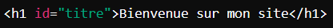

Qu’est-ce que JavaScript ?
JavaScript est un langage de programmation qui permet d’ajouter de l’interactivité à une page web. Quand tu ouvres une page web
et que tu vois des choses qui bougent, des éléments qui changent de couleur, des messages d’alerte, ou des formulaires qui vérifient
les erreurs automatiquement, tout cela est fait avec JavaScript.
Contrairement à HTML et CSS, qui sont statiques, JavaScript permet d'ajouter de la logique et des réactions aux actions de l'utilisateur. Par exemple :
Cliquer sur un bouton pour ouvrir un menu ou afficher une info.
Changer la couleur d'un élément quand on passe la souris dessus.
Vérifier qu’un email est bien écrit dans un formulaire.
Commentaire ajouter JavaScript dans une page HTML
Il y a trois manières principales pour ajouter JavaScript dans une page HTML :
Dans une balise ‹script› directement dans l’HTML : on écrit le code JavaScript
dans une balise ‹script› entre le ‹head›
et le ‹body›, ou en bas de la page juste avant la fermeture de ‹/body›.
En utilisant un fichier JavaScript externe : on écrit tout le code JavaScript dans un fichier à part, avec l'extension .js,
puis on l’intègre dans la page HTML. Cela rend le code plus organisé et réutilisable.
Dans les attributs HTML : on peut écrire du code JavaScript directement dans certains éléments HTML en utilisant des attributs comme
onclick, onmouseover, etc.
Les bases de JavaScript : les éléments essentiels
Variables
Les variables sont des conteneurs où l’on peut stocker des informations, comme le nom
d’un utilisateur ou l’âge d’un internaute. Ces informations peuvent ensuite être utilisées dans le code.
Fonctions
Les fonctions permettent d’exécuter un ensemble d’instructions. Par exemple, on peut définir une fonction pour afficher
un message à l’utilisateur chaque fois qu’il clique sur un bouton.
On peut ensuite appeler cette fonction à chaque fois qu’on veut exécuter cette série d’instructions :
Conditions
Les conditions permettent d'exécuter des actions spécifiques en fonction de certaines situations. Par exemple,
si l’utilisateur a plus de 18 ans, afficher un message de bienvenue pour adultes, sinon afficher un autre message.
Boucles
Les boucles permettent de répéter une action plusieurs fois sans avoir à réécrire le code. Cela est utile pour traiter des listes d'éléments,
comme un tableau de noms ou d'articles.
Ce code va afficher 5 messages, en changeant le numéro à chaque fois.
Interagir avec le HTML et le DOM
Le DOM (Document Object Model) représente la structure HTML d’une page web comme un arbre d’éléments.
Avec JavaScript, on peut sélectionner, modifier et manipuler ces éléments pour créer des pages interactives.
Accéder aux éléments HTML
Pour cibler des éléments dans la page, on utilise des méthodes comme :
document.getElementById("id") pour sélectionner un élément par son id.
document.getElementsByClassName("classe") pour sélectionner des éléments par leur classe.
document.querySelector("sélecteur") pour sélectionner le premier élément qui correspond à un sélecteur CSS.
Supposons qu’on ait un titre dans le HTML avec id="titre". On peut accéder à cet élément et changer son texte.

Modifier les éléments HTML
JavaScript permet de modifier les contenus, attributs et styles CSS des éléments.
Changer le texte : element.innerText ou element.innerHTML pour inclure des balises HTML.
Modifier des attributs : element.setAttribute("attribut", "valeur").
Changer les styles CSS : element.style.property (par exemple element.style.color = "blue";).

Ajouter et supprimer des éléments
JavaScript permet aussi d’ajouter ou de supprimer des éléments dans la page, ce qui est utile pour des contenus dynamiques comme des listes d’articles ou des commentaires.
Ajouter un élément :
Supprimer un élément :
Réagir aux événements
Les événements sont des actions de l’utilisateur comme des clics, des déplacements de souris,
ou des frappes de touches. JavaScript permet de réagir à ces événements pour déclencher des actions.
Types d’événements courants :
click : se déclenche quand on clique sur un élément.
mouseover : se déclenche quand la souris passe au-dessus d’un élément.
keypress : se déclenche quand une touche est enfoncée.
Supposons qu’on ait un bouton HTML et qu’on veuille afficher un message quand il est cliqué.
Fonctionnalités avancées de JavaScript
JavaScript inclut des outils puissants qui permettent d’aller encore plus loin.
Les objets
Les objets sont des structures qui permettent de stocker plusieurs valeurs regroupées. Ils sont très utiles pour organiser des données plus complexes.
Les tableaux
Les tableaux (ou array en JavaScript) sont des listes qui permettent de stocker plusieurs valeurs dans une seule variable.
Les API et les requêtes AJAX
Avec AJAX (Asynchronous JavaScript and XML), on peut charger des données depuis un serveur sans recharger la page. Cela rend l’expérience utilisateur plus fluide.
Exemple (en utilisant fetch pour une requête réseau) :
En résumé :
JavaScript est ce qui rend une page interactive, en permettant de réagir aux actions des utilisateurs et de manipuler dynamiquement le contenu HTML. En associant JavaScript
avec HTML (pour structurer le contenu) et CSS (pour le style), tu peux créer des sites web complets et réactifs.